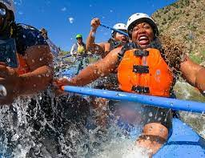

No matter what part of the adventure you're on, there is always something you can learn from it. The people, the animals, the plants, the scenery and even the river itself. There are even legends, tales and the famed “ghost stories” to learn as well.